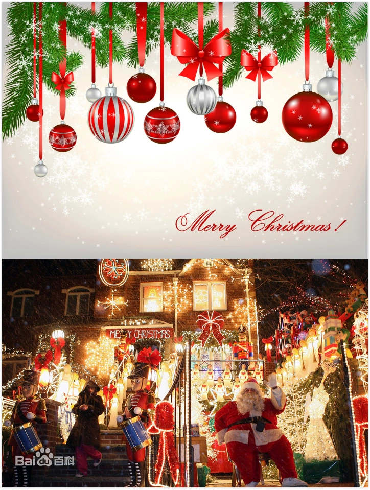
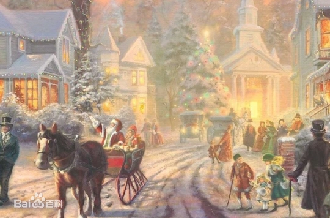

基督教纪念耶稣诞生的重要节日。亦称耶稣圣诞节、主降生节，天主教亦称耶稣圣诞瞻礼。 耶稣诞生的日期，《圣经》并无记载。公元336年罗马教会开始在12月25日过此节。 12月25日原是罗马帝国规定的太阳神诞辰。有人认为选择这天庆祝圣诞，是因为基督教徒 认为耶稣就是正义、永恒的太阳。5世纪中叶以后，圣诞节作为重要节日，成了教会的传统， 并在东西派教会中逐渐传开。因所用历法不同等原因，各教派会举行庆祝的具体日期和活动 形式也有差别。圣诞节习俗传播到亚洲主要是在十九世纪中叶，日本、韩国等都受到了圣诞 文化的影响。现在西方在圣诞节常互赠礼物，举行欢宴，并以圣诞老人、圣诞树等增添节日 气氛，已成为普遍习俗。圣诞节也成为西方世界以及其他很多地区的公共假日。
圣诞贺卡作为圣诞节礼物在美国和欧洲很流行，许多家庭随贺卡带上年度家庭合照或家庭新闻， 新闻一般包括家庭成员在过去一年的优点特长等内容。圣诞节这天寄赠圣诞贺卡，除表示庆贺 圣诞的喜乐外，就是向亲友祝福，以表思念之情。尤其对在孤寂中的亲友，更是亲切的关怀和安慰。
圣诞节饮食包括火鸡、树干蛋糕、杏仁布丁、姜饼、海鲜、glogi酒、沙滩宴、玉米粥等。
更多内容可以百度一下点击跳转百度